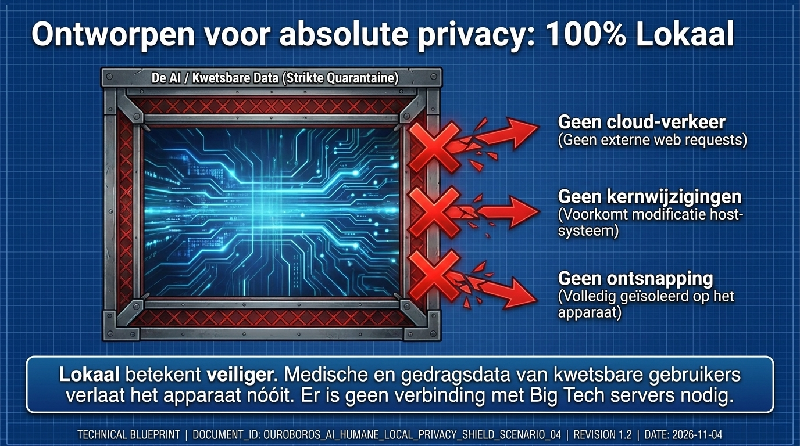
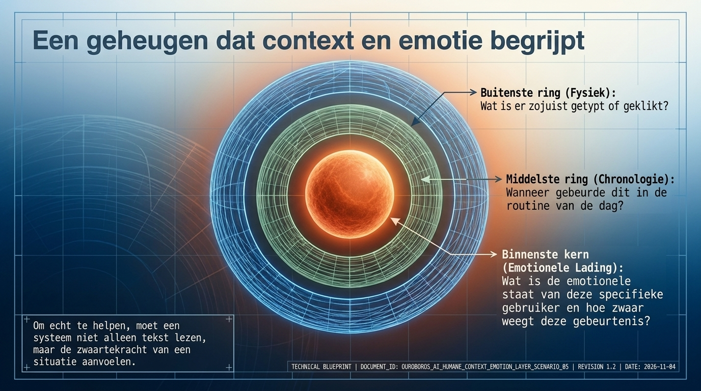
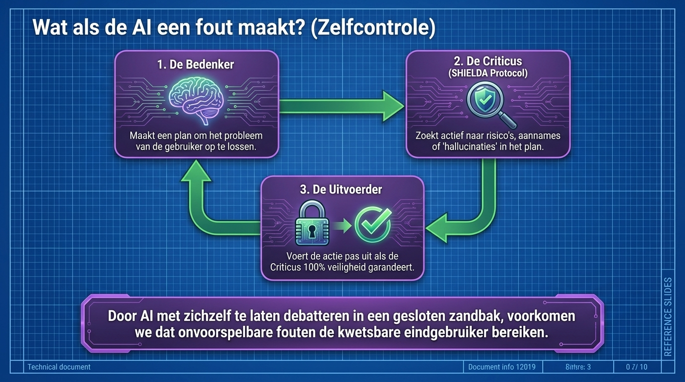

Always listening for relevance
The AI does not wait for a request before noticing meaningful change.
Architecture
The same design language now carries both the technical architecture and the Guardian mission: continuous context, local execution, and careful self-checking before action.

Local-first by design
Ouroboros is conceived as an operating-system-level companion. Sensitive context is processed near the person, not shipped away as the default path.

The cognitive core
Rather than resetting with every exchange, the agent senses, consolidates, and interprets temporal context over time.
The AI does not wait for a request before noticing meaningful change.
The operating environment is interpreted as context, not as isolated data points.
Irregular signals are handled as fluid impressions before they become incidents.

The engine of autonomy
True autonomy must close capability gaps, avoid hallucinated action, and evaluate itself before changing anything important.
Ambient OS ingestion and anomaly detection.
Autonomous initiation of the required resolution.
Strict failsafe analysis of the proposed action.
Execution with temporal state consolidation.

Why organizations can trust the direction

Medical and behavioral data stays on device wherever possible.

The system reasons about routine, timing, and emotional load.

A proposal is internally criticized before execution.

Protective changes can pause for explicit human approval.
Architecture needs context
That is why the collaboration page turns architecture into a practical pilot path.